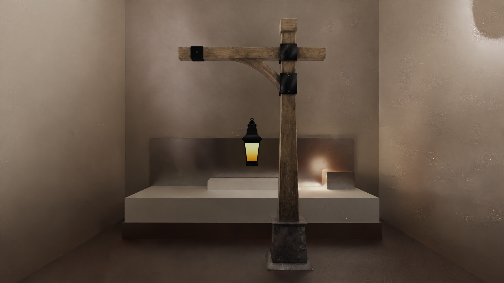

01 — Architecture
One scene. Two rendering contracts.
Built to learn how a modern hybrid renderer is wired — not wrapped in an engine SDK. Path tracer is ground truth and indirect light. Deferred is interactive iteration. Hybrid adds RT shadows + 1-bounce RT GI on the deferred G-buffer.
Path tracer
Vulkan KHR RT
Raygen / closest-hit / miss / any-hit. MIS with Owen-scrambled Sobol. Offline + realtime rgen variants. NEE, env CDF, progressive accumulation.
Deferred
Real-time product path
G-buffer, bindless materials, PBR (Cook-Torrance GGX). Shared TLAS with the RT stack. Fast iteration without reloading the world.
Systems
Not only pixels
Physics (GJK/EPA + BVH), audio, animation, scene ECS. Same C++20 modular layout — render / gpu / physics / scene crates.

DamagedHelmet · PBR metal / glass / cables

Lantern · emissive + wood structure

MetalRoughSpheres · rough↔smooth · metal↔dielectric calibration grid